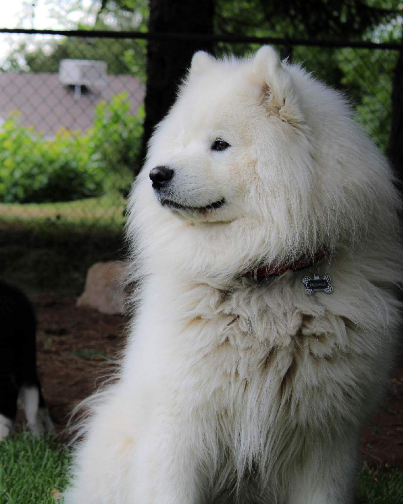
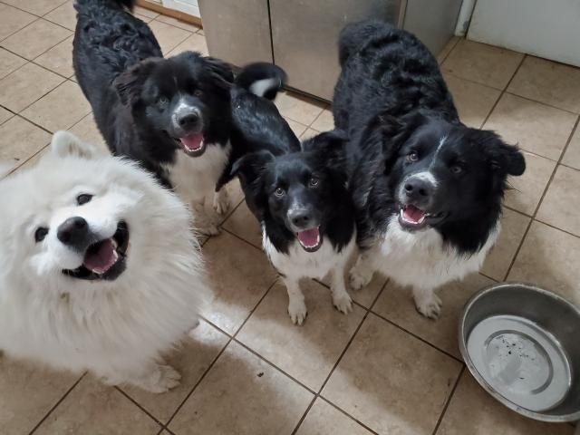
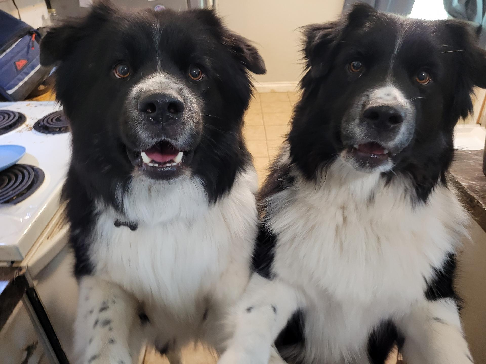
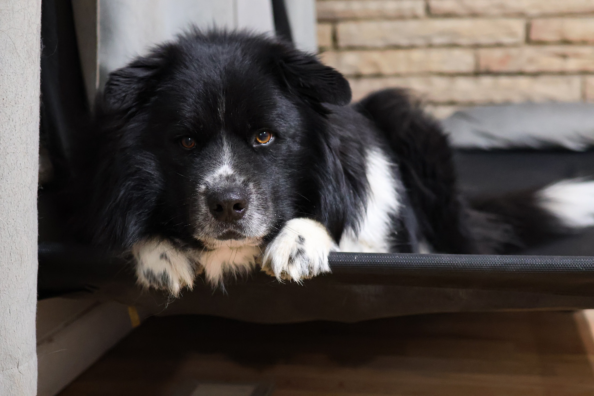

Our pack is led by Mishka, a majestic white Samoyed, and Macie, a hyperactive and attentive Border Collie. While they come from very different backgrounds, they have created an amazing family together.

Learn more about the Samoyed Breed
Click on the photo of Macie to learn more about Border Collies

Out of the original litter of nine, we kept two of the puppies: Niko and Tima. These "Samollies" are a blend of their parents, with their thick coats and distinct personalities. They have the energy of their mom and the heart of their dad.


Samollies are a unique crossbreed. They are known for being highly social and great with families. You can see the whole family in the Full Family Litter photo. Here is a breakdown of our specific pack members:
| Dog Name | Role/Breed | Characteristics | Age |
|---|---|---|---|
| Mishka | Father (Samoyed) | Mischevious & Bullheaded | 8 yrs old |
| Macie | Mother (Border Collie) | High Energy, attention seeking | 7 yrs old |
| Niko | Son (Samolly Mix) | Birdbrained, no spatial awareness | 6 yrs old |
| Tima | Son (Samolly Mix) | Fierce but a scaredy-cat | 6 yrs old |
{kind=link}